#===============================================
# High-dim SARAR N(0,1)
#===============================================
rm(list = ls())
source('GlambdaChen.R')
library('MASS')
library('sp')
library('sf')
library('spData')
library('terra')
library('spdep')
f<-function(Matrix,Vector){
irow = nrow(Matrix)
v =c(0)
for(i in 2:irow){
v[i] =Matrix[i,][1:(i-1)]%*%Vector[1:i-1]
}
return(v)
}
HighDim_SARAR <- function(m,index){
# ==================修改参数====================
# m = 20
# index = 0.14
c = c(3,4,5)
nsim = 1000
rou1 = 0.85
rou2 = 0.15
n = m*m
ps = round(c*n^index)
# ==================数据准备====================
Wnb = cell2nb(m,m,type='queen')
Ws = nb2listw(Wnb)
Wn = listw2mat(Ws)
Mn = Wn
In = diag(n)
An = In - rou1*Wn
Bn = In - rou2*Mn
Ani = solve(An)
Bni = solve(Bn)
# 估计方程准备
Gn = Bn%*%Wn%*%Ani%*%Bni
Gnn = 1/2*(Gn + t(Gn))
Hn = Mn%*%Bni
Hnn = 1/2*(Hn + t(Hn))
g = diag(Gnn)
h = diag(Hnn)
# ==================开始模拟====================
EL = matrix(NA,nsim,length(ps))
colnames(EL)=c(paste0('p=',ps[1]+3),paste0('p=',ps[2]+3),paste0('p=',ps[3]+3))
MEL = matrix(NA,nsim,length(ps))
colnames(MEL)=c(paste0('p=',ps[1]+3),paste0('p=',ps[2]+3),paste0('p=',ps[3]+3))
cat('nsim =',nsim,'c =',c,'index =',index,'\n')
cat('n ','p ','EL ',' MEL ','\n')
j = 0
for(p in ps){
j = j + 1
mu = rep(0,p)
Sigma = diag(p)
# for(k in 1:p){
# for(l in 1:p){
# if(k != l){Sigma[k,l] = 0.5}
# }
# }
beta = matrix(rep(1,p),p,1)
f1 = 0
f2 = 0
for(i in 1:nsim){
Xn = mvrnorm(n,mu,Sigma)
En = rnorm(n,0,1);sigma2 = 1
e = En
b = t(Xn)%*%t(Bn)
s = Bn%*%Wn%*%Ani%*%Xn%*%beta
# 模拟Yi(程序运行不需要Yi值)
# Yn = Ani%*%Xn%*%beta + Ani%*%Bni%*%En
# 估计方程赋值
z = matrix(NA,nrow=n,ncol=p+3)
z[,1:p] = b*e
z[,p+1] = g*(e^2-sigma2) + 2*e*f(Gnn,e) + s*e
z[,p+2] = h*(e^2-sigma2) + 2*e*f(Hnn,e)
z[,p+3] = e*e - rep(sigma2, n)
# 计算EL值
lam = lambdaChen(z)
el = 2*sum( log(1+t(lam)%*%t(z) ) )
mel = (el-p-3)/sqrt(2*(p+3))
if( el<=qchisq(0.95,p+3)) f1=f1+1
if(abs(mel)<=qnorm(0.975)) f2=f2+1
EL[i,j] = el
MEL[i,j] = mel
}
cat(n,p,f1/nsim,f2/nsim,'\n')
}
write.csv( EL, file = paste0('EL' ,n,index,'.csv'), row.names = FALSE) # 保存数据
write.csv(MEL, file = paste0('MEL',n,index,'.csv'), row.names = FALSE) # 保存数据
# ===================绘制QQ图====================
m = 50 # 分位数个数
as = (1:m-0.5)/m # 名义水平
par(mfrow = c(1, 2))
# 绘制正态分位数图
qas <- qnorm(as) # 正态分布的分位数点
c1 = sort(MEL[,1])[ceiling(as*nsim)] # mel的分位数点
c2 = sort(MEL[,2])[ceiling(as*nsim)]
c3 = sort(MEL[,3])[ceiling(as*nsim)]
plot(qas,qas,xaxs = 'i', yaxs = 'i',
yaxt = 'n', ann = F, type = 'l')
axis(2, las = 1)
title(main = paste0('Norm n = ',n,' index = ',index),
xlab = 'Normal quantile', ylab = 'MEL quantile')
lines(qas,c1,type='l',lty=1,lwd=1.5,col='blue1')
lines(qas,c2,type='l',lty=3,lwd=1.5,col='aquamarine4')
lines(qas,c3,type='l',lty=5,lwd=1.5,col='brown2')
points(qnorm(0.95),qnorm(0.95),pch=5)
# 绘制卡方分位数图
x <- seq(0,120,5) # 卡方的分位数点
c1 = sort(EL[,1])[ceiling(as*nsim)] # mel的分位数点
c2 = sort(EL[,2])[ceiling(as*nsim)]
c3 = sort(EL[,3])[ceiling(as*nsim)]
plot(x,x,xaxs = 'i', yaxs = 'i',
xlim =c(min(qchisq(as,ps[1]+3)), max(qchisq(as,ps[3]+3))),
ylim =c(min(qchisq(as,ps[1]+3)), max(qchisq(as,ps[3]+3))),
yaxt = 'n', ann = F, type = 'l')
axis(2, las = 1)
title(main = paste0('ChiS n = ',n,' index = ',index),
xlab = 'ChiSquare quantile', ylab = 'EL quantile')
lines(qchisq(as,ps[1]+3),c1,type='l',lty=1,lwd=1.5,col='blue1')
lines(qchisq(as,ps[2]+3),c2,type='l',lty=3,lwd=1.5,col='aquamarine4')
lines(qchisq(as,ps[3]+3),c3,type='l',lty=5,lwd=1.5,col='brown2')
points(qchisq(0.95,ps[1]+3),qchisq(0.95,ps[1]+3),pch=5,col='blue1')
points(qchisq(0.95,ps[2]+3),qchisq(0.95,ps[2]+3),pch=5,col='aquamarine4')
points(qchisq(0.95,ps[3]+3),qchisq(0.95,ps[3]+3),pch=5,col='brown2')
}
# ==================调用函数====================
for(m in c(10,15,20,30)){
for(index in c(0,0.14,0.16,0.24,0.4)){
HighDim_SARAR(m,index)
}
}
 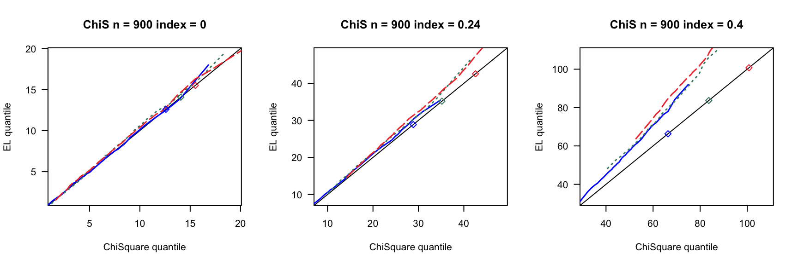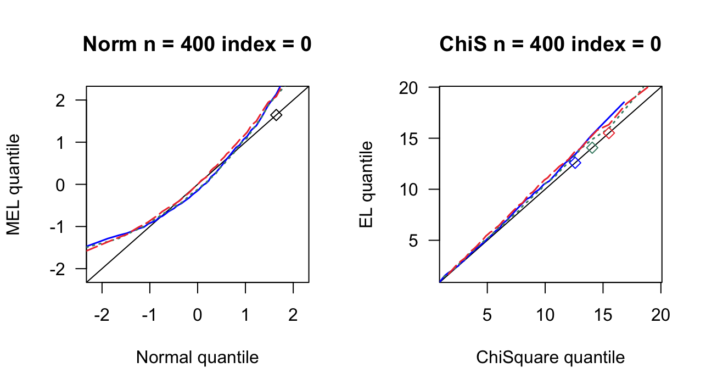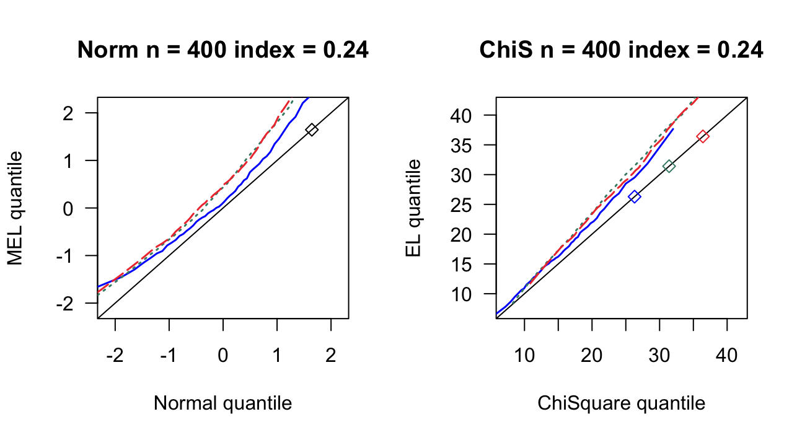
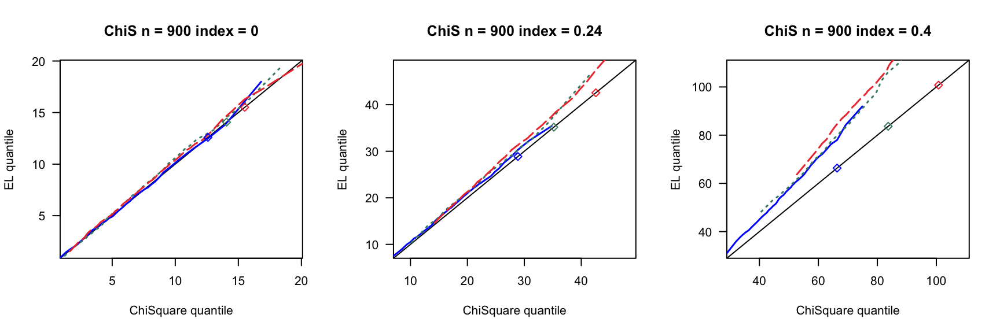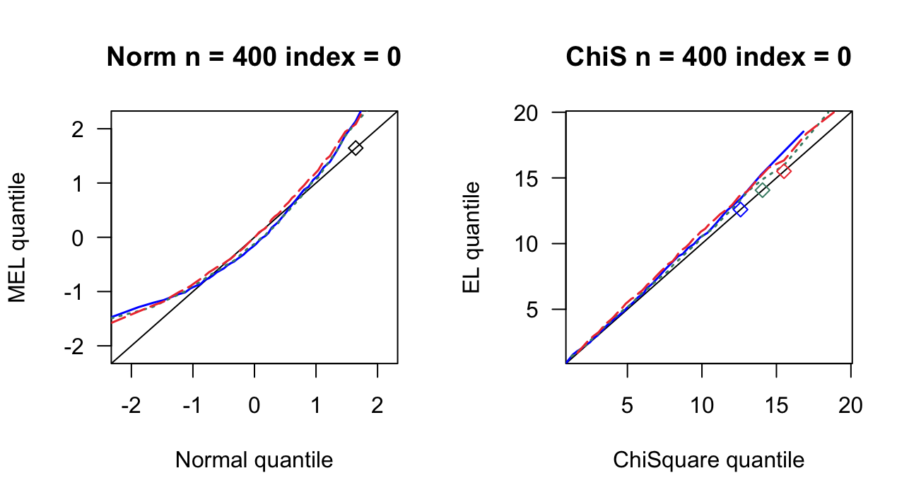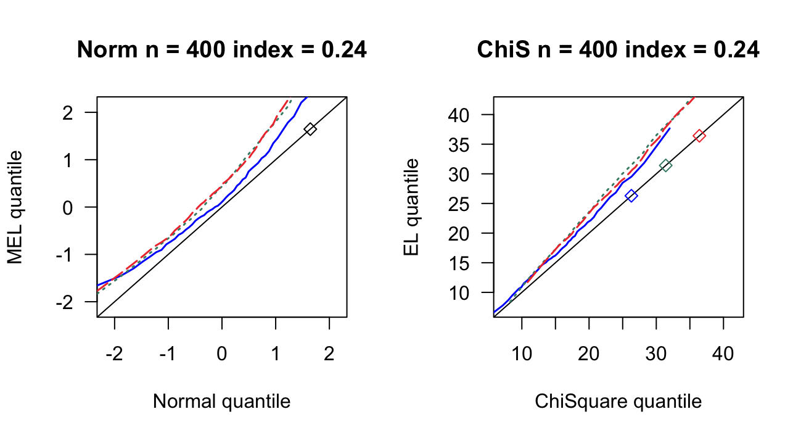 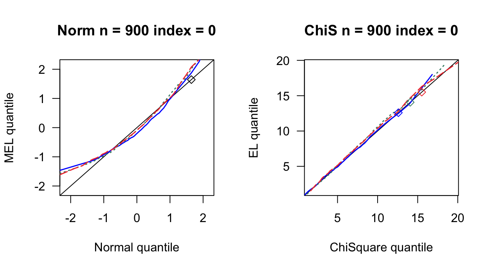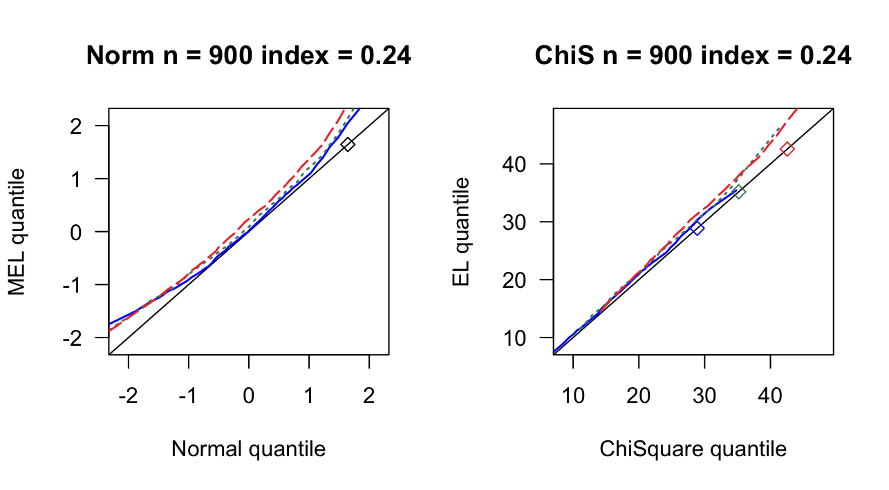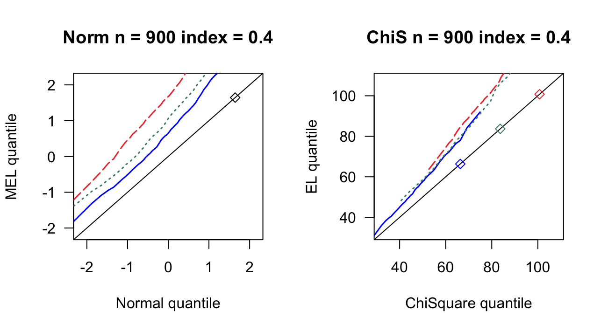
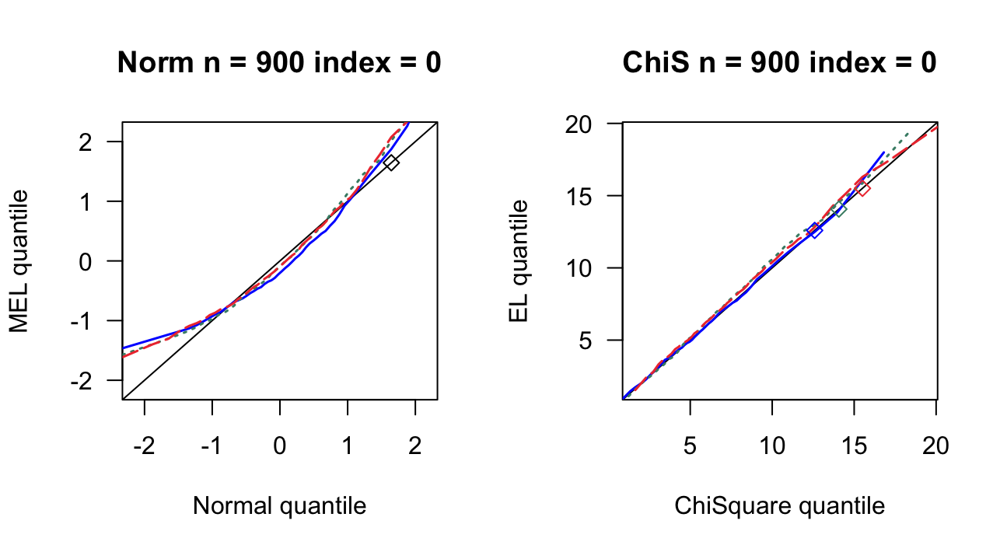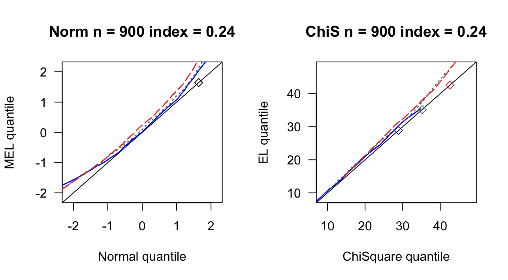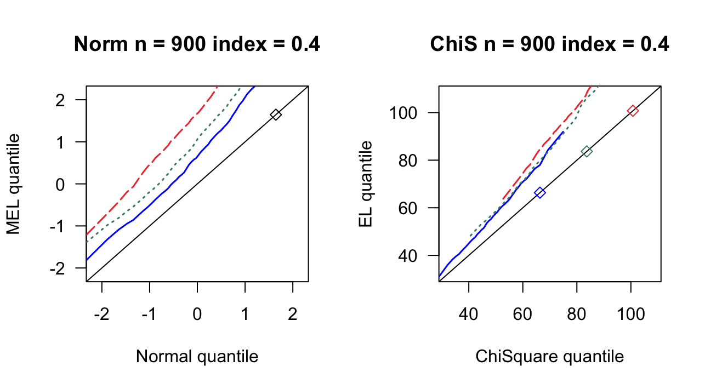